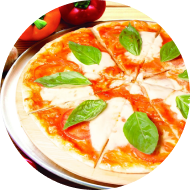
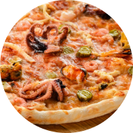

Піцepiя
Знаєш що замовити, натискай на кнопку і ми тобі зателефонуємо.
Або переходь до меню
Акції

-50%
-50%

-50%
До кінця листопада
Про нас
- Переваги замовлення їжі у Pizza
- Доставка від Pizza користується широкою популярністю в Києві, оскільки має безліч переваг
- безкоштовна і швидка доставка від 275 грн ;
- різноманітне меню;
- тільки якісні інгредієнти;
- конструктор піци;
- бортики з сиром та сосискою.
У час доставки ви можете оформити замовлення на піцу, сайди, десерти й отримати свої страви за вказаною адресою. Доставка займає до 30 хвилин. Вас приємно здивують ціни на готові страви, а програма лояльності Pizza Club допоможе купувати ще вигідніше.